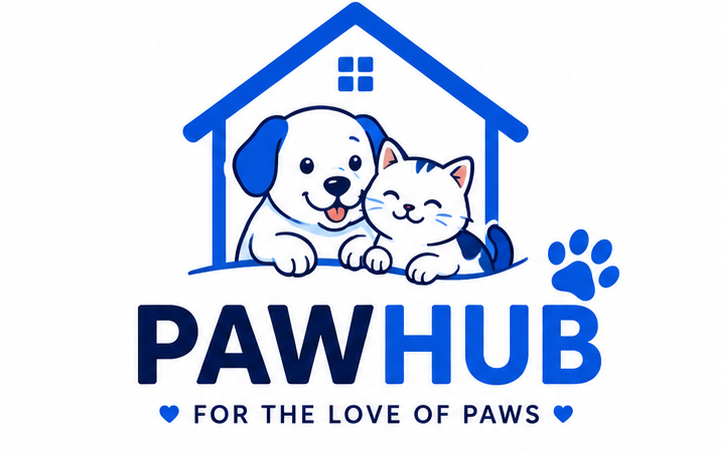
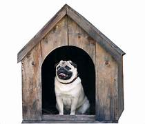
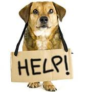

Help us find a pet that thrives in your living space.
Every pet has a unique energy level!
Tell us your heart's preference.
Adoption • Marketplace • Lost & Found • Vet Services

Find your perfect companion.

Everything your pet needs.

Help reunite pets.
Nearby trusted clinics.
Meet pet lovers.
Never miss reminders.